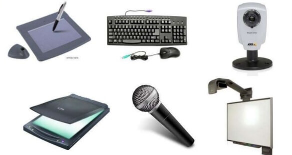

PROGRAMACION DE LAPSO 2021---2022
DISPOSITIVOS DE ENTRADA DE UN COMPUTADOR
PROGRAMACION DE LAPSO 2021---2022
DISPOSITIVOS DE ENTRADA DE UN COMPUTADOR
Los dispositivos de entrada son aquellos equipos y componentes que permiten ingresar información a la unidad de procesamiento; algunos ejemplos conocidos por todos son el teclado, el mouse (también llamado ratón), el escáner, la cámara web (webcam), el lápiz óptico y el micrófono; la forma en la que el usuario interactúa con ellos es muy variada y tiene, en cada caso, un propósito diferente, que puede ser la digitalización de un texto o de una imagen, la captura de una secuencia de vídeo o la grabación de una canción, entre tantas otras posibilidades.
1.La pantalla táctil es un claro ejemplo de un dispositivo híbrido, ya que recoge datos cada vez que se pulsa su superficie, pero también imprime constantemente la información procesada, tal y como un monitor tradicional.
2. Teclado
Es uno de los periféricos de entrada más utilizados con una computadora. Similar a una máquina de escribir eléctrica, un teclado está compuesto de botones que crean letras, números y símbolos, además de realizar otras funciones.
3. Ratón
Conocido como mouse, es otro de los dispositivos de entrada comunmente encontrados con una computadora, se usa para mover un cursor alblueedor de una pantalla, también puede mover y seleccionar texto, iconos, archivos y carpetas.
4.Escáner
Es un dispositivo electrónico que puede capturar imágenes de elementos físicos y convertirlos a formatos digitales, que a su vez se pueden almacenar en una computadora y ver o modificar utilizando aplicaciones de software.
5.Escáner de código de barras
Es un periférico de entrada de mano o estacionario que se utiliza para capturar y leer información contenida en un código de barras. Se conoce también como lector de código de barras, escáner de precios o escáner de punto de venta.
6.Sensor de huella digital
Es un tipo de tecnología que identifica y autentica las huellas digitales de una persona para otorgar o denegar el acceso a un sistema informático o una instalación física.
7.Cámara web
Una cámara web o cámara de red (en inglés: webcam) es una pequeña cámara digital conectada a una computadora la cual puede capturar imágenes y transmitirlas a través de Internet, ya sea a una página web u otras computadoras de forma privada
8.Micrófono
Es un periférico de entrada que convierte ondas de sonido en ondas eléctricas análogas.
9.Lápiz optico
Es un dispositivo de entrada de computadora sensible a la luz, básicamente un lápiz, que se utiliza para seleccionar texto, dibujar imágenes e interactuar con elementos de la interfaz de usuario en una pantalla o monitor de computadora.
10_.Palanca de mando o Joystick:Una palanca de mando o joystick es un periférico de entrada que consiste en una palanca que gira sobre una base e informa su ángulo o dirección al dispositivo que está controlando.
 La tecnología informática continúa evolucionando y permite a las personas interactuar con los ordenadores de manera más eficiente. Gran parte de la interacción del ordenador se hace posible con el uso de dispositivos de entrada --- equipo electrónico pequeño que se utiliza para los datos o información de entrada en una CPU. Los dispositivos de entrada vienen en una variedad de tipos y ayudan a crear una amplia gama de tareas que un ordenador puede lograr.
1.Entrada de datos El teclado del ordenador es el dispositivo de entrada de ordenador más comunes. Esta pieza de equipo viene en una variedad de formas y tamaños que van desde --- teclados que son grandes y voluminosos para otros que son completamente inalámbrico.
Cualquiera sea la forma que sea, todos ellos sirven un propósito información --- entrar en un ordenador. Permite a las personas para llevar a cabo muchas tareas, incluyendo el procesamiento de textos, informes, gestión de bases de datos, programación y otros trabajos de gran volumen de datos.
2. La facilidad de uso Cuando el mundo se graduó de un sistema operativo basado puramente en el texto y se trasladó a una interfaz gráfica, el ratón se convirtió en uno de los dispositivos de entrada más utilizados. Es una extensión del teclado, que se utiliza para navegar o interactuar con el ordenador haciendo clic en un botón y un cursor de maniobra. Las aplicaciones de software se convirtieron rápidamente en más respetuosos del usuario mediante la implementación de apuntar y hacer clic de navegación para ejecutar comandos en lugar de memorizar un código o combinaciones de la misma para realizar funciones.
Los atributos de apuntar y hacer clic resultan útiles en aplicaciones web y de azar. Una combinación ratón y el teclado permite a las personas para llevar a cabo la mayoría de las tareas que un ordenador se utiliza para
3.La interactividad
Cámaras Web hacen que la informática más interactivas, añadiendo un elemento visual durante la comunicación con la familia, los amigos, o de negocios. Adición de entrada de audio mediante el uso de un micrófono hace hablar a través del ordenador posible. La combinación de estos dos dispositivos de entrada hace que la videoconferencia posible sin el uso de los equipos audiovisuales de alta gama.
4. Otras ventajas
Los dispositivos de entrada se utilizan para una amplia gama de aplicaciones, incluyendo el diseño, venta al por menor y entretenimiento. sistemas CAD( “Diseño asistido por computadora”) utilizan dispositivos de entrada para la creación gráfica detallada para la arquitectura y el diseño industrial. escáneres de códigos de barras se utilizan ahora para muchos sistemas informáticos de punto de venta, por lo que pago y envío más rápido y más eficiente. teclados MIDI ( «Musical Instrument Digital Interface») se utilizan para la música digital y efectos de sonido. La variedad de dispositivos de entrada está creciendo continuamente, lo que permite a los usuarios realizar más tareas que nunca.
1_.El teclado
Sin el teclado los usuarios tendriamos mas inconvenientes a la hora de realizar cualquier tipo de documentos
2_.El mouse:
Son muy sensibles. Hay que tratarlos con mucho
cuidado y sin el no podriamos seleccional arrastra ni abril un documento o archivo
3_.El scanner
Sin este no prodriamos editar nuestros documentos ,ni fotografias
4_.Lector de codigo de barras
Sin este dispositivo se les aria el trabajo mucho mas dificil a los comerciantes a la hora de vender cualquier producto algunos son costosos
5_.Pantalla tactil Son Frágiles al contacto con objetos afilados o ambientes
agresivos:
Como la principal fuente de interacción con el
ordenador, la pantalla tendrá un montón de uso
haciendo que se ensucie rápidamente 6_.El microfono:
Sin este se les complicaria la vida a los estudios de grabacion ya que sin el nos e podria grabar ningun tipo de sonido en el computador
7_.Camara Web:
Sin este dispositivo no podriamos compartir imagenes , videos en tiempo real
8_.Palanca de mando o Joystick:
se te pueden lastimar mucho los dedos gordos por jugar mucho y se dañan fácilmente
1_.Adaptación :Los dispositivos de entrada se han sabido adaptar con el tiempo y se han reformado de acuerdo a la tendencia de la época. Un ejemplo de esto son los teclados digitales, que aparecen en las pantallas táctiles.
2_.Comodidad
:Por ser aparatos de entrada, el usuario de la computadora es quien interactúa de modo constante con ellos. Por tal razón el teclado, mouse y análogos se han ido mejorando y adaptando para que cada vez sea más cómoda su uso para las personas.
3_.Conectividad :Los dispositivos de entrada se diseñan con la finalidad expresa de facilitar que sea siempre lo más eficiente posible la conexión con el sistema informático central y que ofrezca una buena experiencia enviando la información a ser procesada.
4_.Habituales históricamente
:A pesar de que los dispositivos de entrada que se ven como los más necesarios son ciertamente antiguos, como el mouse o el teclado, no pareciera que hasta el momento vayan a desaparecer o que ya exista una patente en el mercado para reemplazarlos.
5_.En contacto con los sentidos
:Los dispositivos de entrada son de algún modo periféricos que se utilizan para poder traducir las instrucciones de la persona a la computadora, ya sea para procesar cierta información, como un teclado, o para que el cursor se dirija a donde se desea, como un mouse.
Los dispositivos de entrada son importantes porque son aquellos que permiten interactuar y agregar información nueva a un dispositivo informático. Por ejemplo, si una computadora no tuviera dispositivos de entrada, podría funcionar solo, pero no habría manera de cambiar su configuración, corregir errores u otras interacciones de otros usuarios. Además, si quisiera agregar nueva información a la computadora (por ejemplo, texto, comando, documento, imagen, etc.), no podría hacerlo sin un dispositivo de entrada. Hay muchos tipos diferentes de dispositivos de entrada. En general, se dividen en dos categorías: dispositivos de entrada manual y dispositivos de entrada automática. Los dispositivos de entrada manual son utilizados por las personas para ingresar datos a mano. La entrada automática de datos se produce cuando la computadora obtiene información de un informe y rellena automáticamente el formulario o la hoja de cálculo sin que el humano transfiera los datos.
DISPOSITIVOS DE ENTRADAS MAS CONOCIDOS
VENTAJAS DE LOS DISPOSITIVOS DE ENTRADA
DESVENTAJAS DE LOS DISPOSITIVOS DE ENTRADA
CARACTERISTICAS DELO DISPOSITIVOS DE ENTRADA
IMPORTANCIA DE LOS DISPOSITIVOS DE ENTRADA